Results
Everything on this page was produced by the scripts in the repository from a private set of clinical knee X-ray pairs (see Data). No raw X-ray is published.
Interactive point cloud
Loading...
18,496 points, exported from Open3D. The model and input image that produced this file were not recorded. Every point is gray (equal red, green and blue values).
3D renders by model
Screenshots of the Open3D point cloud for five samples per model, shown at reduced size. Depth is a relative estimate from one merged 2D image (see limitations), so differences between models show how each one interprets the same kind of input, not which one is closer to the true anatomy.
Depth Anything V2 (Small)
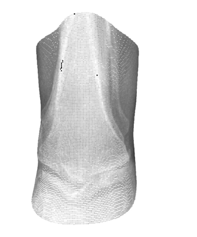
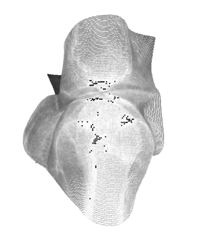
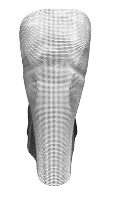
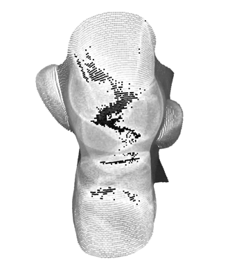
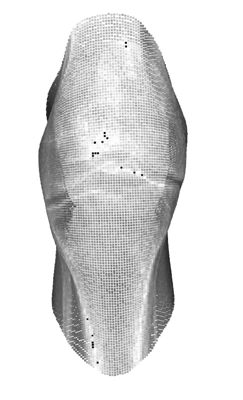
GLPN (NYU)
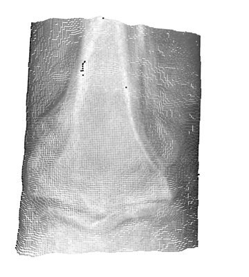
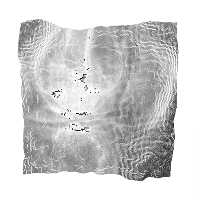
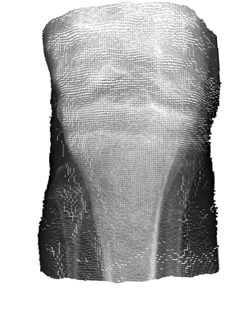
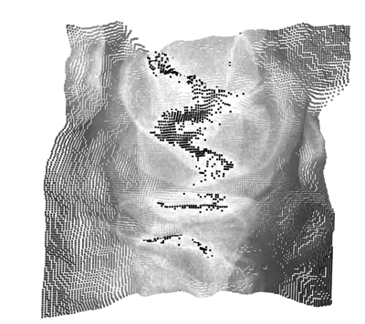
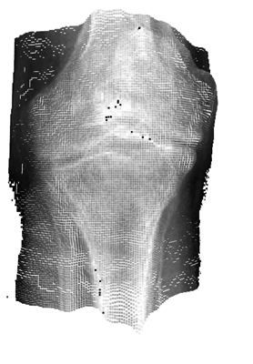
ZoeDepth (NYU+KITTI)
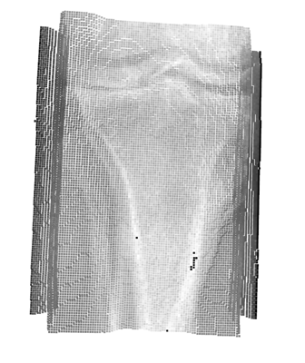
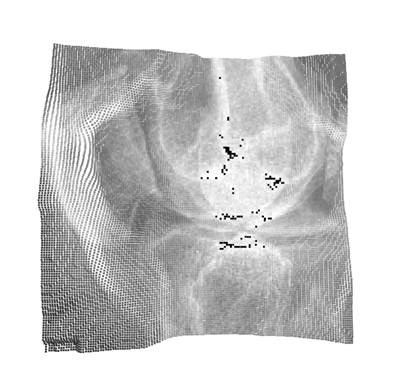
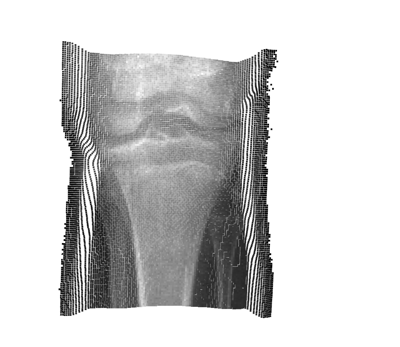
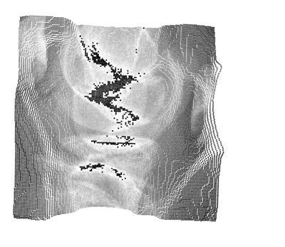
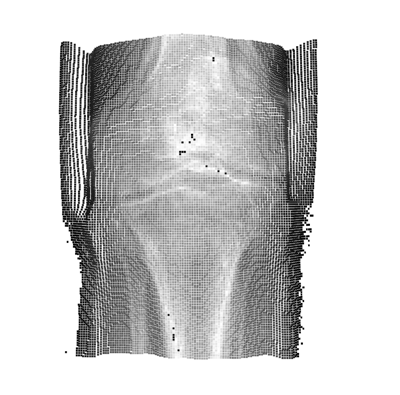
DPT-Hybrid MiDaS
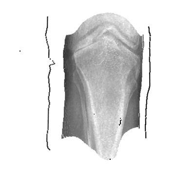
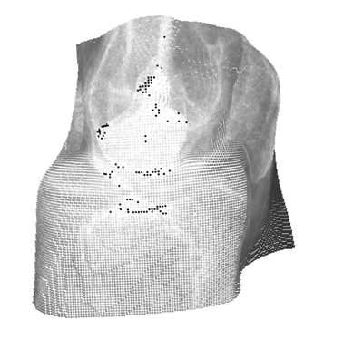
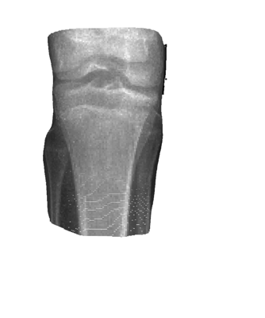
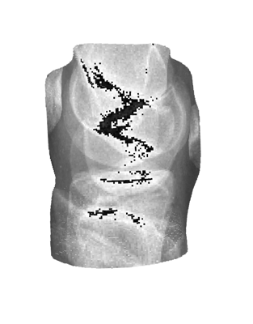
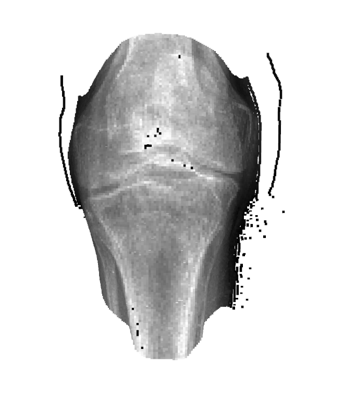
DPT with DINOv2 backbone (small, KITTI)
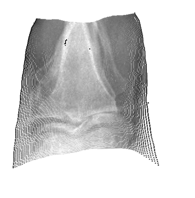
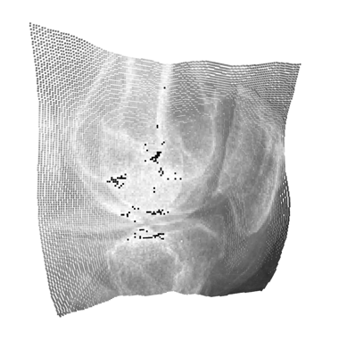
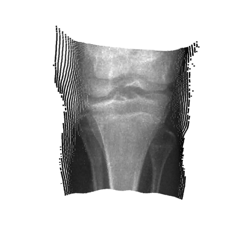
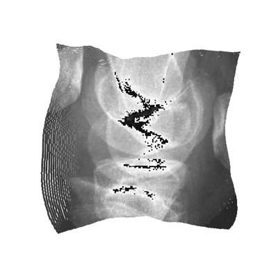
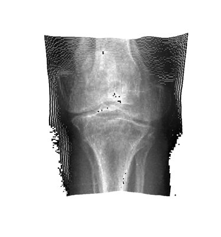
Metrics
The scripts write performance_metrics_*.csv, one per model script. These files are not published here as a comparison, for three reasons:
- Every value is computed from the right-hand image before any depth model runs. The columns compare the bilateral-filtered image (Noise), the BBHE image (Contrast) and the merged image (Register) with the resized input. They measure the preprocessing, not the depth models.
- The values are computed once after the image loop, so each file holds the numbers for one image pair, not an average.
- The CSVs for different models are not independent.
performance_metrics_depthv2.csvandperformance_metrics_dinov2.csvmatch in all but one cell, andperformance_metrics_GLPN.csvandperformance_metrics_inteldpt.csvmatch in all but one cell. The DINOv2 script processes two pairs and the Depth Anything script processes every pair, so identical values are not expected from separate runs.
Numbers are omitted until the preprocessing metrics are re-run from a clean state.